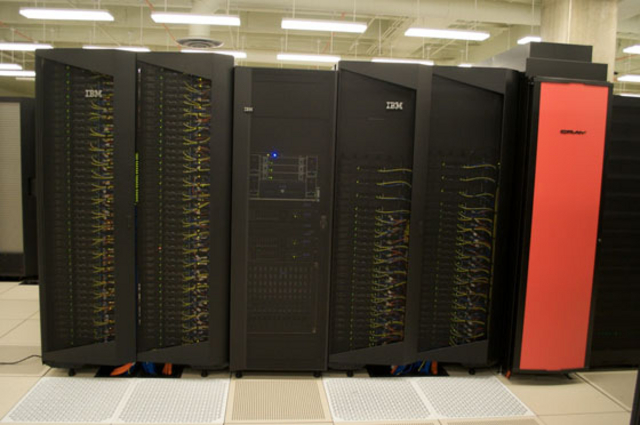
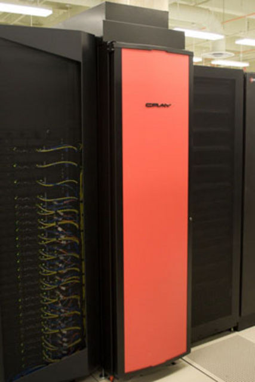

9. Hardware¶
FutureGrid is build out of a number of clusters that are interconected with up to a 10GB Ethernet among its sites.
9.1. Compute Resources¶
| Name | System Type | # Nodes | # CPUS | # Cores | TFLOPS | RAM (GB) | Storage (TB) | Site |
|---|---|---|---|---|---|---|---|---|
| india | IBM iDataplex | 128 | 256 | 1024 | 11 | 3072 | 335 | IU |
| hotel | IBM iDataplex | 84 | 168 | 672 | 7 | 2016 | 120 | UC |
| sierra | IBM iDataplex | 84 | 168 | 672 | 7 | 2688 | 96 | SDSC |
| foxtrot | IBM iDataplex | 32 | 64 | 256 | 3 | 768 | 0 | UF |
| alamo | Dell Poweredge | 96 | 192 | 768 | 8 | 1152 | 30 | TACC |
| xray | Cray XT5m | 1 | 166 | 664 | 6 | 1328 | 5.4 | IU |
| bravo | HP Proliant | 16 | 32 | 128 | 1.7 | 3072 | 128 | IU |
| delta | SuperMicro GPU Cluster | 16 | 32 | 192 | 1333 | 144 | IU | |
| lima | Aeon Eclipse64 | 8 | 16 | 128 | 1.3 | 512 | 3.8 | SDSC |
| echo | SuperMicro ScaleMP Cluster | 16 | 32 | 192 | 2 | 6144 | 192 | IU |
| Name | Alamo | Bravo | Delta | Foxtrot | Hotel | India | Sierra | xray |
|---|---|---|---|---|---|---|---|---|
| Image | a | b | d | f | h |  | s |  |
| Organization | Texas Advanced Computing Center | Indiana University | Indiana University | University of Florida | University of Chicago | Indiana University | San Diego Supercomputer Center | Indiana University |
| Machine Type | Cluster | Cluster | Cluster | Cluster | Cluster | Cluster | Cluster | Cluster |
| System Type | Dell PowerEdge M610 Blade | HP Proliant | IBM iDataPlex dx 360 M2 | IBM iDataPlex dx 360 M2 | IBM iDataPlex dx 360 M2 | IBM iDataPlex dx 340 | Cray XT5m | |
| CPU type | Intel Xeon X5550 | Intel Xeon E5620 | Intel Xeon 5660 | Intel Xeon X5520 | Intel Xeon X5550 | Intel Xeon X5550 | Intel Xeon L5420 | AMD Opteron 2378 |
| Host Name | alamo | bravo | delta | foxtrot | hotel | india | sierra | xray |
| CPU Speed | 2.66GHz | 2.40GHz | 2.80 GHz | 2.26GHz | 2.66GHz | 2.66GHz | 2.5GHz | 2.4GHz |
| Number of CPUs | 192 | 32 | 32 | 64 | 168 | 256 | 168 | 168 |
| Number of nodes | 96 | 16 | 16 | 32 | 84 | 128 | 84 | 1 |
| RAM | 12 GB DDR3 1333Mhz | 192 GB DDR3 1333Mhz | 192 GB DDR3 1333 Mhz | 24 GB DDR3 1333Mhz | 24 GB DDR3 1333Mhz | 24 GB DDR3 1333Mhz | 32 GB DDR2-667 | 8 GB DDR2-800 |
| Total RAM (GB) | 1152 | 3072 | 3072 | 768 | 2016 | 3072 | 2688 | 1344 |
| Number of cores | 768 | 128 | 256 | 672 | 1024 | 672 | 672 | |
| Operating System | Linux | Linux | Linux | Linux | Linux | Linux | Linux | Linux |
| Tflops | 8 | 1.7 | 3 | 7 | 11 | 7 | 6 | |
| Disk Size (TB) | 48 | 15 | 20 | 120 | 335 | 72 | 335 | |
| Hard Drives | 500 GB Internal 7200 RPM SAS Drive | 6x2TB Internal 7200 RPM SATA Drive | Seagate Constellation 7.2 K RPM 64 MB Cache SATA 92GB | 500 GB Internal 7200 RPM SATA Drive | 1 TB Internal 7200 RPM SATA Drive | 3000 GB Internal 7200 RPM SATA Drive | 160 GB Internal 7200 RPM SATA Drive | 6 TB Internal Lustre Storage |
| Primary storage shared by all nodes | NFS | NFS | NFS | NFS | GPFS | NFS | ZFS filesystem with 76.8 TB raid2 storage and 5.4 TB of raid0 (for scratch) | NFS |
| Storage details | RAID 9260-4i 1pt SAS2 512 MB SGL | |||||||
| Connection configuration | Mellanox 4x QDR InfiniBand adapters | Mellanox 4x DDR InfiniBand adapters | Mellanox 4x DDR InfiniBand adapters | Mellanox 4x DDR InfiniBand adapters | Mellanox 4x DDR InfiniBand adapters | Cray SeaStar Interconnect | ||
| Primary storage shared by all nodes | 92 ???? | |||||||
| CPUs (cores) per node | 2 | |||||||
| Cores per CPU | 6 | |||||||
| Total number of GPU cores | 192 | |||||||
| GPU type | nVIDIA Tesla C2070 | |||||||
| Cores per GPU | 448 | |||||||
| GPUs per node | 2 | |||||||
| Batch system | Torque |
{kind=link}
{kind=link}
Todo
add the exho node
144 Cores available on Echo
FutureGrid’s Echo cluster, located at Indiana University, offers users access to 12 machines which operate virtually as one machine.
Echo 4262523580 Bytes memory (which is more than 4TB) 144 core with “Intel(R) Xeon(R) CPU E5-2640 0 @ 2.50GHz” 2.8T scratch space
FutureGrid systems team members are working on enhancements that could lead to increases in the number of cores, memory size, and scratch space. We will keep you up to date on developments. .. csv-table:: Storage Resources
header: System Type , Capacity (TB) , File System , Site
DDN 9550 , 339 shared with IU + , Luster , IU Data Capacitor , 16 TB dedicated , , DDN 6620 , 120 , GPFS , UC SunFire x4540 , 96 , ZFS , SDSC Dell MD3000 , 30 , NFS , TACC IBM dx360 M3 , 24 , NFS , UF
9.2. Networks¶
| Resource Name | Network Devices | ||
|---|---|---|---|
| IU Cray | Cray 2D Torus SeaStar | ||
| IU iDataPlex | DDR IB | QLogic switch with Mellanox ConnectX adapters | Blade Network Technologies & Force10 Ethernet switches |
| SDSC | DDR IB | Cisco switch with Mellanox ConnectX adapters | Juniper Ethernet switches |
| TACC | QDR IB | Mellanox switches and adapters | Dell Ethernet switches |
| UC | DDR IB | QLogic switch with Mellanox ConnectX adapters | Blade Network Technologies & Juniper switches |
| UF | Ethernet only (Blade Network Technologies & Force10 switches) |
The FutureGrid network provides for connectivity among FutureGrid participants, and network access to the Network Impairments Device (NID). Five participants connect through a variety of network providers (see Figure: Logigal Network Diagram). Interconnects at the Indiana Gigapop, Internet2 and NLR extend access to FutureGrid resources to researchers nationally and internationally.

Figure: Logigal Network Diagram

Figure: Juniper EX8208
Todo
inaccurate atlas diagram, can not change as network group has no info, however wil lead to confusion, needs to be stated
Todo
proxy router is mentioned, but we seem only to have dosabled commands, which commands can users do?
FutureGrid deployed a Juniper EX8208 at the Core in Chicago’s StarLight facility. The Juniper EX series provides for Layer2 and Layer3 connectivity. FutureGrid uses the EX to fulfill the network services (i.e., interconnectivity and external connectivity). The EX provides a special feature labeled ‘firewall based forwarding’, allowing seamless integration with network impairments. The GlobalNOC at Indiana University provides network engineering services, and email and phone support. GlobalNOC resources for public wan information can be found at http://noc.futuregrid.org/. Available tools include:
| Image | Tool | Description |
|---|---|---|
 |
FutureGrid Atlas | View the current level of FutureGrid Network traffic as displayed on a geographical map. |
 |
SNAPP Traffic Graphs | View high-speed traffic graphs collected at one-minute samples using the Indiana University-developed SNAPP tool. Create custom views of the FutureGrid network and view historic utilization with greater data resolution. |
 |
FutureGrid NOC Router Proxy | Submit show commands to the FutureGrid router. |
 |
FutureGrid Physical Map | TBD |
 |
FutureGrid Topology Map | TBD |
As IPv6 test beds are not available at all FutureGrid partner sites, early implementation of iPv6 would slow important software development work. As a result, current plans call for FutureGrid to continue using IPv4.
Below is further information about networking:
| Resource | Network Switch | Link |
|---|---|---|
| FutureGrid Core | Juniper EX8200 | |
| India | Force10 C-150 | Juniper/Dell EX series Force 10 |
| Bravo | Force10 S60 | force10-s60 |
| Delta | Force10 S60 | |
| Echo | Force10 S60 | |
| Sierra | Juniper EX4200 | |
| Hotel | Juniper EX4200 | |
| Alamo | Dell PowerConnect 6000 Series | Dell, PowerConnect |
| Alamo | Dell PowerConnect 6224 | |
| Xray | Force10, C-150 | Force10-c150 |
| foxtrot | internal network switch: IBM/BLADE Rack Switch G8000 and public network switch: Force10 S50 | |
| Node NICs | built-in (IBM iDataPlex DX360 M2) dual Intel 82575EB Gigabit Network Connection 10Gbps, Myricom Myri-10G Dual-Protocol NIC (available on login node) |
Todo
network swithes inside india not corerct
Todo
unkown switch, hotel india, foxtrot? IBM rack switches (formerly BNT)
9.2.1. Network Impairments Device (NID)¶
Researchers on FutureGrid may perodically employ the use of a Spirent XGEM, a Network Impairments Emulator. The XGEM allows users to accurately create the delays and impairments that occur over live production networks for validating and evaluating new products and technologies. The XGEM supports a variety of impairments with the most common being delay, packet loss, jitter and re-ordering.

Figure: Spirent XGEM
The XGEM contains two blades, each with a 10GE interface. Traffic received on one blade is automatically transmitted on the other blade, and vice-versa. This allows the XGEM to be deployed as a pass-through device. Impairments are applied unidirectionally. An identical or different impairment can be applied in either direction, or simultaneously in both directions.
FutureGrid also utilizes a Juniper EX8208 as the primary network element between all of the FutureGrid participants. Juniper’s EX platform contains firewall-based forwarding, which allows us to insert the XGEM between FutureGrid participants with only software changes (see Figure 1).
The firewall-based forwarding feature can be configured to forward traffic unidirectionally or bidirectionally through the XGEM using a single IP address or any size subnet. Only traffic defined by the Juniper EX8208 will be impaired, leaving all other traffic between FutureGrid participants unaffected.
This implementation requires traffic to traverse the FutureGrid Core in order to be impaired. Additional configuration might be required at the participants’ individual sites for impairments to occur locally.